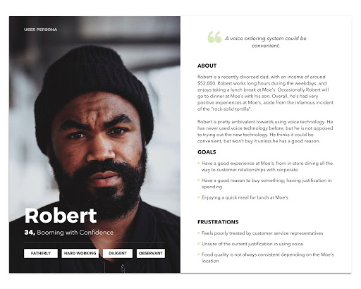
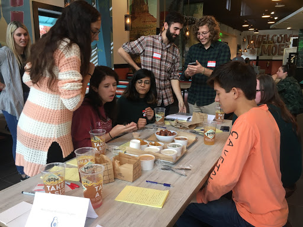

Story
From the very start of the project we began with questions. The prompt was incredibly open-ended and a lot more abstract for conducting research than simply testing existing user interfaces or customer interactions. In addition, the area of voice interaction technology was completely new to us, and not very well researched across the industry in general, so we clearly had our research work cut out for us. At our first meeting we did a full-on brainstorm of every possible question we would like to know the answer to, these ranged from questions about the experience and process of Moe’s customers in the restaurant to questions about the nature of voice interaction and what makes one successful. We then categorized these questions into appropriate categories, some of which demanded us going off and conducting scholarly research and competitive analyses and some of which simply involved talking to the Moe’s representatives to gather demographic and product data they already had.
Our first sticky note brainstorm session, wherein we organized all the questions we wanted to answer
After we organized our questions, we set off to answer them. We posed our Moe’s centric questions to our industry partner in our first of many weekly touchpoint meetings and then broke off individually to gather academic and journalistic resources. I created a repository for the research we found
We gathered and summarized many pages of articles, organized like this
As we compiled our resources, we also realized we needed some firsthand experience in a Moe’s restaurant. While we had all eaten there at some point in the past, we had never actually observed and codified the interactions customers experience there. So, we conducted a formal observation session of a Moe’s restaurant nearby. We spread out to different parts of the restaurant and tracked any notable interactions customers engaged in over the course of an hour. Then we regrouped, organized our findings, and did an onsite brainstorming session where we tried to imagine any and all ‘areas’ of Moe’s that a voice interaction could fit in. The obvious answer was for online ordering, but since our prompt was so open-ended, we wanted to approach it from every possible angle and leave no potential stone unturned. The results of this brainstorm were documented but didn’t actually come into play until much later in the project when we designed our participatory design workshop.
Sticky notes from our initial observation/brainstorm session
As we began gathering and going over data, we realized the next step in the process would be to understand more about the users: their needs, perceptions, and preferences. However, we faced two potentially separate user groups: Moe’s customers and users of voice assistants. Ideally a voice ordering system would hit the overlap of these two groups, but how these two demographics coincided with each other was not something we fully understood; so, we created a very simple survey that we could use to gather initial quantitative data on Moe’s customers and use to screen potential subjects for phone interviews. We drafted and refined our survey questions through many iterations to strike a balance between gathering valuable data and filterable information but keeping the survey short enough that we could get a high number of respondents.
A small sampling of questions from our screening survey
We distributed the survey through the Moe’s email list and received a decent number of results (although not quite enough to draw statistically significant conclusions, it was still very revealing of a number of general correlations and trends). One of the most valuable takeaways from this survey was achieved by creating composite data charts of the information we gathered, for instance by combining the data of “people that own voice assistants” and “people that have used voice assistants” a very revealing trend appears that there are many people using voice assistants without owning them (so perhaps at a friend’s house), which is a difficult model to work with for a personalized account linked food ordering system
Composite charts created by analyzing data from multiple survey questions together
Then we composed a series of interview questions and reached out to any survey respondents that opted in for a follow-up phone interview. The number of interviews we successfully executed was small, but again provided valuable data that helped us craft storyboards, user personas, and empathy maps which we used in our next main project milestone to present to our industry partner.
Storyboards, Personas, and Empathy Maps
In this phase of our project we also executed a few other research techniques to gather a broad array of data before drawing any conclusions. We contacted a former Moe’s employee and I conducted a semi-structured interview with him. This provided some fantastic insights into the human interaction between customers and employees, including Moe’s lingo and the way repeat customers interact with the dining experience. We also conducted a competitive analysis on the Starbucks Google Assistant App, which provided insights into the current implementation of this type of technology and the limitations and challenges that come along with it.
Storyboard highlighting the experience of ordering using the Starbucks voice assistant
It was at this point in the project, after assessing our data and research findings, that we were confronted with the reality that our results were not following the path we expected, to the degree that we needed to meet with our industry partner and reassess project direction. We traveled to the Moe’s corporate office (technically their parent company Focus Brands) and I presented our findings, conclusions, and a number of suggestions on different routes forward with the project. While the exact details of this discussion and our findings are restricted by the NDA, suffice to say this presentation was well received by the Moe’s representatives and led to pivot in the focus of our efforts, directed most heavily by the revelation that Moe’s was about to undertake a total rebrand!
First slide of our presentation at Moe's HQ. For NDA reasons I cannot further disclose the content of this prensentation or I'd show slides highlighting our analysis and proposed paths forward
The news of a Moe’s rebrand coming so late into the project was massive news. All of our research had been done on the existing Moe’s experience, but with everything from menu items to the overall restaurant look and feel changing, a lot of our understanding became obsolete. Fortunately, Moe’s had a test restaurant less than a mile away from their headquarters showcasing their new menu and branding, so we took a fieldtrip their and planned our next move.
Some shots of the new Moe's
At this phase in the project we planned and executed three more research methods: observation sessions at the new Moe’s, an interview with an employee at the new Moe’s, and finally, our biggest undertaking, creating and executing a participatory design workshop to be held in the new Moe’s in under two weeks.
For the observation sessions our team of four broke into two groups of two, executing two hour long stays in the new Moe’s at distinctly different times of day. The first group went on a Thursday evening, when crowds were low and only a few customers entered at a time. The second group went on a Moe’s Monday during lunch time, one of the peak traffic times for the franchise. Observations gathered ranged from how people experienced the new eating space to the reception and ordering choices regarding to the new menu.
Some more shots from the new Moe's, including one of the team getting firsthand experience with the new menu items
The interview with the Moe’s employee was actually very interesting. When we first visited the new Moe’s location, I personally recognized one of the chefs behind the counter as a close friend that I had lost touch with after undergrad. He warmly greeted me and using that personal connection I was able to arrange an interview with him outside of working hours (I also subsequently helped him work on his car). The interview was semi-structured with some major questions we wanted answered predefined and leaving it open to me as the interviewer to dig in deeper on any interesting responses.
After the interview was complete, we used our findings combined with insights from the observation sessions to craft a participatory design session. We began by asking what questions we wanted this session to address and narrowed our focus on:
1.) Gaining a deeper understanding of how customers interact with the new Moe’s brand and menu.
2.) Exploring different areas of the restaurant space voice technology might be integrated in.
3.) Understanding how users would expect an interaction with a voice assistant ordering system to transact, from start to finish.
With these main ideas in mind we outlined the overall flow of the workshop, designed creative activities to drive participant communication and expression, and created the necessary resources and physical assets to prepare for the day of.
I scripted the majority of the introduction and transition sections as I would be the lead facilitator, in charge of guiding the overall flow of the workshop and prompting users for deeper questioning when elaboration was necessary.
Me explaining one of our activities to participants at the workshop
The activities we created involved roleplay elements where participants could rotate between acting as a customer in the store or ordering remotely and as the actual voice ordering system. This methodology was designed to explore both how users would expect to interact with the technology and how they would envision the technology would respond. Once the activities were outlined, we tested them out with fellow HCI students to refine the procedure and plan, then we gathered our participants and executed the workshop.
A glimpse of a whiteboard used in designing the participatory workshop activities

An image of me executing our activity trial run with two other HCI students. This proved invaluable in helping us refine our activities and build confidence in what we were about to do.
Overall the workshop was a huge success. The Moe’s representative we had been working closely with up to this point actually came in person to the workshop to monitor it and provide support in any way they could. The feedback we gathered on the new Moe’s branding and participant interactions was actually able to be delivered directly from the participants to the representative at the end of the session in a fashion incredibly reminiscent of a focus group. The Moe’s representative expressed to us afterwards that she really appreciated the feedback and it was incredibly valuable to hear from the actual demographics we gathered. In addition, the participants also really enjoyed the session, they got to try new menu items and left feeling incredibly validated by being able to give direct feedback on their experience.
Some pix from the participatory design workshop
Finally, the findings on voice interaction from the variety of workshop activities were incredibly fruitful and laid the groundwork for our final deliverables. But first we had to organize the data, by reviewing recordings of all of the activities and breaking the highlights out into a comprehensive affinity map.

Affinity map pics
The final phase of the project flew by in a breeze as we only had a short few weeks to turn our data into prototypes and guidelines, design and execute expert heuristic analyses, and present all of our work to the industry partner.
We began by outlining a set of guidelines that summarized the most important findings from all of our research. These guidelines served a dual purpose, both as a tool for us to direct our prototype creation and as a valuable deliverable to our industry partner, to handoff the project once the semester reached completion. Due to NDA restrictions, those guidelines cannot be presented here, but they were insightful enough that any future team Moe’s may employ to develop a voice prototype system would have a strong foundation for their work.
Next, we crafted a demo video of what an idealized interaction with the voice ordering system may look like. The purpose of this was to show what an optimal voice experience might look like, bringing the more abstract guidelines into tangible examples. Again, we viewed this as a very valuable deliverable that our industry partner could show to any future developers and clearly transmit the most important ideas the system should invoke. We used a tool called “BotSociety” to mockup the automated interactions and it’s worth noting that this video put aside any technical limitations a real system may have.


The BotSociety tool we used to create our demo video
Finally, it was time to attempt creating an actual prototype voice interface. I suggested a tool known as Dialog Flow that was created by Google to be used with their Google Home Assistant technology. The allure of the Dialog Flow tool was a programable voice recognition and response software that was based on AI and machine learning to get smarter with more training. In order to create an AI agent for our purposes we needed to transform the Moe’s menu into a hierarchical information architecture. We spent a long time brainstorming exactly how the ordering process should proceed and then created a diagram detailing our proposed architecture this would go on to be the third deliverable in the project.
brainstorming and chart
Then, due to my background in computer engineering and software, I single-handedly undertook the process of understanding and programming the prototype AI voice agent. I won’t drag into the technical details, but there was a definite learning curve and certainly a number of technical challenges in the implementation process that restricted how robust the prototype could be in comparison to our ideal system. However, in the end, while not perfect, the voice agent lent itself to fairly successful interactions.
Dialog FLow
Once a working system existed, we had one final task to accomplish before presenting our work to our industry partner: executing user testing and expert heuristic analysis. In order to do this, we designed a set metrics that our prototype could be measured against and would illicit valuable feedback from our testers. Then, we reached out to two expert researchers within Georgia Tech who could individually evaluate our system. The first expert was Dr. Bruce Walker, head of the Sonification Lab at GT, and our second expert was one of the PhD students that worked alongside Dr. Walker in his lab. Their expertise revolved directly around audio and vocal user interface design and they were happy to lend their time and attention to evaluating our system.
One other team-member and I spent over two hours with Dr. Walker and then another two hours with the PhD student as we guided them through our prototype for evaluation. We recorded these sessions and then played them back for review (at 2x speed) with the rest of our team. From these recordings we pulled out valuable insights into the limitations and weaknesses of our prototype and even our guidelines overall which we then amended to reflect new understandings.
Finally, every team member conducted and recorded much more concise user testing of the prototype with non-expert individuals to gather feedback from lay-people that were closer to actual users of the proposed system. Again, recordings were reviewed, and insights integrated into our guidelines as we prepared our final presentation.
Evaluation Chart + Bruce Walker
In the end, I delivered the final presentation of all of our work to the industry partners and we handed off all of our deliverables so they could use them in future endeavors. It is important to recognize that to continue had the timeframe for the project been longer, we would have iterated on and improved our prototype design, followed by further testing and reworking, but due to the time constraints of the semester drawing to a close, the project too came to an end here.
presentation pic
Conclusion
Overall this project was incredibly valuable to me as a UX professional. Through our work, I learned how to design and execute all manner of research methods. I learned the strengths and weaknesses of those methods and feel confident that in any future setting I could be presented a challenging research question and be able to smoothly design and implement the necessary steps to reach a concrete and valuable answer.